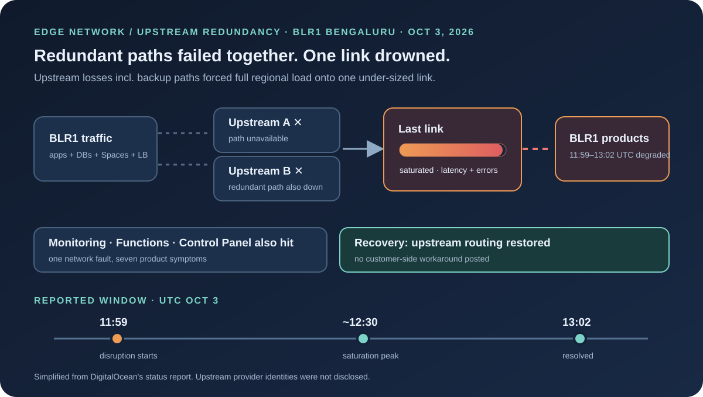
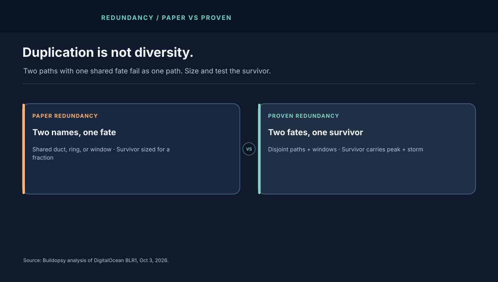

1. Seven Products, One Wire
The affected list is the story. Monitoring, App Platform, Managed Databases, Functions, Load Balancers, Spaces, and the Cloud Control Panel all degraded together between 11:59 and 13:02 UTC. Customers saw degraded connectivity, increased latency, or intermittent errors reaching resources in the region. When the control panel degrades alongside the data plane, operators lose both the workload and the window they watch it through.
Single-region, multi-product correlation like this almost always points below the products — at shared network, power, or identity. DigitalOcean's report points at the network: multiple paths operated by upstream connectivity providers were unavailable, including redundant paths intended to maintain connectivity during a disruption.
2. The Architecture: Why One Link Inherited Everything
A region like BLR1 reaches the internet and interconnects through several upstream paths: direct provider links plus backup paths engineered to carry load when a primary drops. Under normal conditions each path carries a share. Under a single-path failure, the survivors absorb the orphaned share — provided they were sized for it.
DigitalOcean describes the bad case: enough paths failed at once that the remainder could not carry the total. Traffic shifted to a remaining link with insufficient capacity, producing saturation — full buffers, rising latency, drops, retries. Saturation is democratic suffering: every product sharing the link degrades together, and retries from every product add offered load to the same wire.
The critical phrase is "including redundant paths." Redundancy that shares a fate — same provider, same fiber bundle, same maintenance window, same software push — is duplication, not diversity. The report does not name the providers or the shared trigger, so the joint-failure mechanism stays an open question.
3. The Saturation Math
Model the region's egress-plus-interconnect demand as D gigabits per second across three upstream paths sized at C1, C2, C3. Healthy, D < C1+C2+C3 with headroom. Lose two paths and the survivor must carry D alone. If D = 60 Gbps and the survivor offers C = 25 Gbps, utilization hits 240%. Queues fill in seconds, tail latency explodes, and goodput collapses well below 25 Gbps as retransmissions crowd out fresh traffic.
The recovery math is equally brutal. Even after paths return, every product's retry backlog arrives at once — Functions re-invoking, Spaces clients resuming, database pools reconnecting, the control panel polling. Offered load briefly exceeds steady-state D, so the "recovered" network can re-saturate unless reconnection is staggered. DigitalOcean reports services returned to normal after routing was restored with providers; no staged-reconnect advisory was posted, which suggests the backlog drained within the 63-minute window rather than needing customer action.

4. What the Report Changes — and What I Would Add
DigitalOcean's disclosure names the layer, the mechanism, and the recovery owner honestly. What it omits — provider identities, path capacities, the joint-failure trigger — limits how much any outsider can verify. That is normal for a 63-minute upstream event; the fixes below do not need those details:
- Prove N-1, then N-2, at peak plus storm. Load-test the region with each upstream drained in turn, then with the two largest drained together. Measure goodput, not just link state. A path that is "up" at 240% utilization is down for customers.
- Diversify fate, not just names. Two providers sharing a duct, a metro fiber ring, or a maintenance calendar fail together. Demand disjoint physical paths and disjoint change windows, in writing.
- Shed by product priority, automatically. When saturation starts, control-panel reads and health checks should keep a reserved lane while bulk transfer backs off. Seven products degrading equally means no triage policy fired.
- Stagger the reconnect storm. After upstream recovery, ramp Functions concurrency, pool reconnects, and client retries with jittered backoff ceilings so the survivor link is not re-drowned by its own rescue.
- Publish the survivor capacity. Customers sizing multi-AZ or multi-region failover need to know what one link can actually carry. "Redundant paths exist" without capacities is marketing; "survivor carries X Gbps at p99 Y ms" is engineering.
Read this alongside the Azure WAN route-withdrawal teardown — same moral through the opposite organ. Azure lost its map; BLR1 lost its roads. In both cases the paths into the region failed independently of the servers inside it.
5. Field Glossary: Eight Terms This Incident Teaches
Network outages punish vague language first. Eight terms, each tied to what the report describes:
| Term | What it means here | Why it mattered in BLR1 |
|---|---|---|
| Upstream provider | The carrier whose paths connect the region outward. | Their paths failed; DigitalOcean's own gear was never blamed. |
| Redundant path | A spare route meant to carry load when primaries drop. | Failed alongside primaries — redundancy with a shared fate. |
| Link saturation | Offered traffic exceeds what the wire can carry. | The survivor link drowned; every product degraded together. |
| Joint / correlated failure | Backups failing from the same trigger as primaries. | The incident's core: N paths behaving as one. |
| N-1 / N-2 survival | Carrying full load with one (or two) paths removed. | BLR1 proved N-2 at best — and the survivor was undersized. |
| Degraded connectivity | Reachable but slow, lossy, or flaky — not cleanly down. | Harder than a hard outage: clients retry instead of failing over. |
| Reconnect storm | The backlog surge the moment paths return. | Functions, pools, and polls all rushing one wire at once. |
| Control panel fate-sharing | Losing the observability window with the workload. | Monitoring and the control panel degraded with customer traffic. |
6. Operator Playbook: Your First 30 Minutes of Regional Saturation
When every product in one region degrades at once and your routers look healthy, suspect the paths, not the boxes:
- Minute 0–5: correlate across products. Seven products failing together is one network event until proven otherwise. Check upstream status, regional latency, and per-path loss before touching any product config.
- Minute 5–10: protect the control plane. Reserve a lane for health checks, status reads, and operator access. If monitoring drowns with customer traffic, you lose the ability to verify your own recovery.
- Minute 10–20: shed bulk, keep signals. Throttle backups, image pulls, and batch transfers; preserve API reads and control operations. Saturation triage is deciding what drowns so the rest can swim.
- Minute 20–30: plan the staggered return. Pre-stage jittered reconnect ceilings for connection pools and function concurrency so the moment upstream recovers, your own backlog does not re-saturate it. Announce the next check-in time; "waiting on upstream with shedding active" is a legitimate posture.
Afterward, demand two artifacts from your provider review: disjoint-fate evidence for every redundant path (different ducts, different maintenance calendars, in writing) and a measured survivor capacity number at peak plus storm load. The cloud networking course teaches upstream diversity and saturation drills directly.
7. The Cost Model
Sixty-three minutes is short enough to dismiss and long enough to bill. Take a team running 200 Droplets plus managed databases plus Spaces in BLR1 at a modeled $18,000 per month in regional spend — roughly $25 per hour. Direct burn during the window is trivial. The exposure sits in failed deploys, timed-out functions billed per invocation, retried egress, and engineer hours: five engineers at a modeled $80 per hour for two hours of response and verification adds $800 against $26 of idle infrastructure. Model your own with the downtime cost calculator; the ratio, not the plug numbers, is the point.
Appendix A. Worked Example: Sizing the Survivor Link
Labeled scenario model throughout — DigitalOcean disclosed no capacities. Take a BLR1-style region with three products sharing upstream egress: App Platform at a modeled 18 Gbps peak, Spaces plus CDN origin at 22 Gbps, and managed databases plus control traffic at 8 Gbps. Peak aggregate demand D is 48 Gbps. Three upstream paths offer 25, 20, and 15 Gbps respectively: 60 Gbps total, a comfortable 1.25× headroom in the healthy state.
| Survivor scenario | Carrying capacity | Utilization at peak | Verdict |
|---|---|---|---|
| Lose the 15 Gbps path (N-1) | 45 Gbps | 107% | Degraded — shedding required immediately |
| Lose 25 + 15 (N-2, BLR1-like) | 20 Gbps | 240% | Collapsed — saturation across all products |
| Lose 25 + 15 with 40% shed | 20 Gbps vs 29 Gbps offered | 145% | Still saturated — shed deeper or fail over |
| Proven design: survivor ≥ peak + storm | ≥ 65 Gbps on any one path | ≤ 74% | Survives N-2 with retry storm headroom |
The third row is the trap most teams fall into: a 40% shed feels aggressive yet still leaves the link at 145%. Saturation is binary past 100% — queues do not care how brave the shedding felt. Size the survivor for peak demand plus the retry storm (model 1.3–1.5× peak), or accept in writing that N-2 means regional failover, not regional survival. Price the bigger pipe with the egress calculator and the per-target load with the target capacity calculator; a survivor link that costs 3× the minimum is still cheaper than one 63-minute multi-product outage per year.
Then model the return. Sixty-three minutes of pent-up demand — database pools reconnecting, functions re-firing, Spaces clients resuming, control-panel polling — can easily offer 2× steady state in the first five minutes after recovery. Without staggered reconnect ceilings, the "recovered" link re-saturates and the incident gets a second peak that never appears in the provider's timeline. Recovery is a ramp, not a switch.
Appendix B. Reference Posture: The Upstream Review I Would Demand
The document I would require before calling any region redundant:
- A fate map. Every upstream path listed with its physical duct, metro ring, provider, and maintenance calendar. Any two paths sharing a row fail as one path — count them accordingly.
- A measured survivor number. "Path C carries X Gbps at p99 Y ms under peak-plus-storm load, measured date." Capacities asserted without a drill date are rumors.
- An automatic shed policy. Saturation past 85% trips priority shedding: control and health-check traffic keeps a reserved lane; bulk transfer backs off first. No human meeting required.
- A reconnect ramp. Pools, functions, and clients rejoin with jittered ceilings over minutes, verified in the last game-day. The storm after the storm is a choice.
- A provider-review cadence. Joint-failure triggers get a written postmortem from the provider or the provider gets replaced. "Upstream issue, now resolved" without a trigger is a placeholder, not a report.
- A customer-facing capacity note. Publish what one link can carry so tenants size their own failover honestly. Opacity here exports risk to every customer.
Pair this review with the cloud networking course and re-run it whenever a path, provider, or peak changes. Redundancy rots silently; only drills keep it honest.
Appendix C. Deep Dive: Anatomy of Saturation — Why Goodput Collapses First
Saturation kills goodput (useful bytes delivered) long before it kills throughput (bytes on the wire). The wire stays busy; the work stops. Here is the collapse sequence that ran inside BLR1's survivor link, stage by stage.
Stage 1: buffers fill, latency climbs. Every interface queues packets in buffers. As offered load passes capacity, queues grow and each packet waits longer — latency rises smoothly while nothing is yet dropped. Users feel "slow" before anything errors. This is the only gentle stage, and it lasts minutes at most under 2× overload.
Stage 2: tail drop and synchronized retries. Full buffers drop new arrivals (tail drop). TCP senders notice roughly together, back off together, then retry together — global synchronization that turns seven products' worth of clients into a marching band. Drops cluster, recoveries cluster, and the link oscillates between empty and drowning instead of settling at capacity.
Stage 3: retransmission eats the wire. Retried bytes consume the same link as fresh bytes. At 240% offered load, well over half the wire can carry duplicates of data already delivered or doomed — throughput looks heroic on the interface counter while goodput craters. This is congestion collapse in miniature: the harder clients try, the less work completes.
Stage 4: timeouts cascade upward. Application deadlines (5–30 s) fire across Functions, database drivers, and Spaces clients. Each timeout spawns application-level retries on top of TCP retries — two retry layers multiplying the same overload. Control-panel polls join the pile, which is why observability degrades with the workload instead of above it.
The engineering escapes, in order of leverage: priority queueing that sheds bulk transfer before control traffic (protects the window); ECN-style early signaling so senders back off before drops (breaks synchronization); per-product rate caps that keep any single tenant from eating the survivor (contains the storm); and shedding at 85% utilization rather than 100% (never let buffers fill). None of these add capacity. All of them protect goodput — which is the only number users ever feel.
Appendix D. The Drill: A Half-Day Game-Day for Upstream Loss
The survivor number in Appendix A is a rumor until a drill produces it. Here is a four-hour exercise that mints a real one — run it against staging plus a maintenance-window production slot, with the upstream provider invited, not surprised.
Hour 1: baseline and hypotheses. Record per-path goodput, p99 latency, and per-product error budgets at normal load. Each team writes its prediction: "draining path A moves X Gbps to B and C; product Y degrades first at threshold Z." Predictions go on the wall; the drill grades them. Unwritten predictions are indistinguishable from luck afterward.
Hour 2: N-1 injects. Drain each upstream path in turn for twenty minutes at production-shaped load (replay yesterday's peak, plus a 30% synthetic storm). Measure what actually moves: which products wobble, where queues build, whether the shed policy fires without human touch. If shedding needs a meeting, the drill has already found its first fix.
Hour 3: the N-2 morning. Drain the two largest paths together — the BLR1 shape — and run the full playbook from §6: correlate by fate, protect the control lane, shed bulk, stage the reconnect ramp. Time every step. The recovery drill matters more than the failure drill: practice the staggered return until the ramp timings are muscle memory, because the real morning will not offer rehearsal time.
Hour 4: the fate review. Score predictions against measurements, publish the survivor number with its drill date, and file the gaps as dated work items: fate-map corrections, shed-policy thresholds, reconnect ceilings, provider questions. A game-day whose artifacts are a number, a date, and a ticket list beats a postmortem every time — it prices the fix before the outage does.
8. The Verdict
DigitalOcean's report is short, specific, and admirably blunt about redundant paths failing. The design gap is equally blunt: the region's survival depended on a link that could not carry the region. Until survivor capacity is sized, diversified, and rehearsed at storm load, every multi-product region carries this same 63-minute shape inside it.
Two backups. One wire. Sixty-three minutes of proof.
What to watch next: whether DigitalOcean publishes survivor capacities or joint-failure triggers in a follow-up, whether your own provider answers the fate-map questions from Appendix B in writing, and when your team last drained an upstream path at peak on purpose. The next upstream morning is already scheduled by somebody's maintenance calendar — the only open question is whether your region has rehearsed it.
Sources and Method
Window, product list, symptoms, upstream cause, and saturation mechanism are attributed to DigitalOcean's status report for incident 6z6dt3t1bhb9. Capacity and cost figures are Buildopsy's labeled scenario models. Provider identities and path-loss trigger were not disclosed.